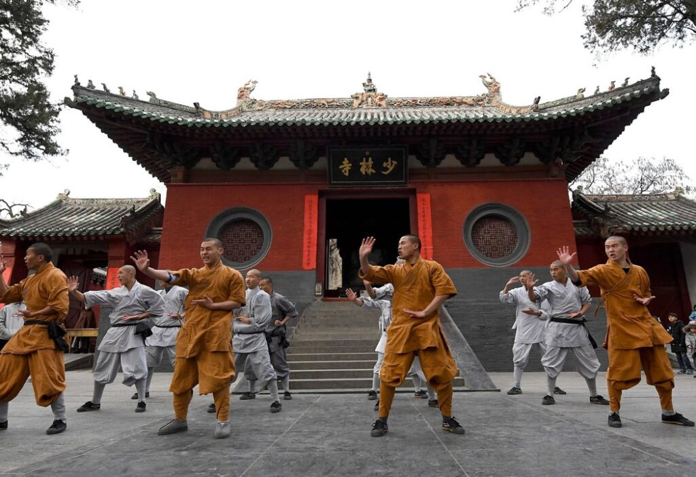

Ir treinar Kung Fu na região do Templo Shaolin (localizado no Monte Song, em Dengfeng, província de Henan, na China) é um projeto acessível a estrangeiros, mas exige planejamento de custos, escolha de escola e adaptação à rotina intensa. 1. Onde você realmente treina O Templo Shaolin em si funciona primariamente como um centro religioso e turístico, e não como uma academia aberta de artes marciais. Na prática, os estrangeiros e estudantes treinam em escolas de artes marciais credenciadas e acampamentos de treinamento situados nos arredores do templo ou na cidade de Dengfeng, sob a orientação de mestres (shifus). 2. Planejamento e custos • Escolha da escola: Existem diversas academias (como centros de treinamento tradicionais e escolas de wushu/kung fu) onde você pode se inscrever por períodos que variam de 1 semana a vários anos. • Pacotes e valores: Os pacotes costumam incluir treinos diários (geralmente 3 turnos), 3 refeições por dia e alojamento (compartilhado ou privado). Os custos variam conforme o tempo: pacotes de curta duração ficam em torno de 3.500 CNY para 1 semana até cerca de 8.500 CNY ou mais para 1 mês, enquanto taxas de tempo integral giram em torno de US$ 980 mensais em algumas instituições. • Visto: Para estadias curtas (como até 14 dias para brasileiros), existem regras de isenção de visto ou facilidades, mas períodos superiores a 30 dias exigem a solicitação de visto adequado (como o visto X2 de estudante). • Viagem: O trajeto padrão envolve voar para Pequim, pegar um trem de alta velocidade até Zhengzhou e, de lá, seguir de transporte local ou táxi até Dengfeng/Templo Shaolin. 3. Como é a rotina de treinos • Horários: O dia começa cedo (muitas vezes por volta das 5h50 ou 6h00) com corrida, aquecimento e condicionamento físico pesado. • Conteúdo: As aulas abrangem o aprendizado de posturas básicas, alongamentos, formas tradicionais (taolu), manuseio de armas (como o bastão), além de opcionais como calejamento e san shou (combate). • Idioma e adaptação: A barreira da língua pode ser um desafio se você não falar nada de mandarim, e o ritmo físico exige boa preparação prévia de resistência e flexibilidade.

ir para pagina2